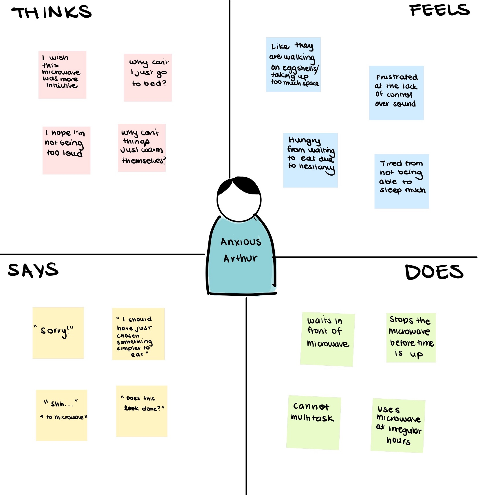

Context
For this project, the goal was to understand more about user interfaces.
1) Observation: observed several users interacting with a communal microwave, then
2) Interviews: Interviewed them about their experience
3) Personas: Developed "personas" based on observations and their interviews, and
4) Storyboard:Storyboarded their interactions.
Competencies demonstrated
User Interviews | Personas | Storyboarding
Observations & Interviews
Next, I observed users interacting with the interface and interviewed them about their experience.
Personas
Next, we were tasked with creating "personas" based on our observations and interviews. Personas serve as "specific" users or "archetypes", which allow designers to create products catered to a user. Here, I used the observations and responses to interviews to create specific personas that I could then use to understand more about the experience of using the interface and use for storyboarding.

Burnt Out Betty
She is the primary cook of her household and as such, puts some unrealistic expectations on herself to cook/present elaborate meals every day — even when she is exhausted. Betty often cooks while thinking about other responsibilities: which leads to her forgetting things in the microwave (necessitating reheating), overheating (due to rushed number punching), and consequent in-microwave explosions that require extensive clean up. “Burnt out Betty” needs a break.

Anxious Arthur
When it comes to cooking, or kitchen related tasks in general, Arthur is often more worried about “not taking up too much space” than about the actual cooking. Arthur is very apologetic, and is often concerned about making too much sound — especially when using the microwave at odds hours to heat up snacks or drinks that have gone room temp. He is known for standing in front of the microwave to make sure it doesn’t beep, and also for religiously clearing the time so that he spares the next user the inconvenience.